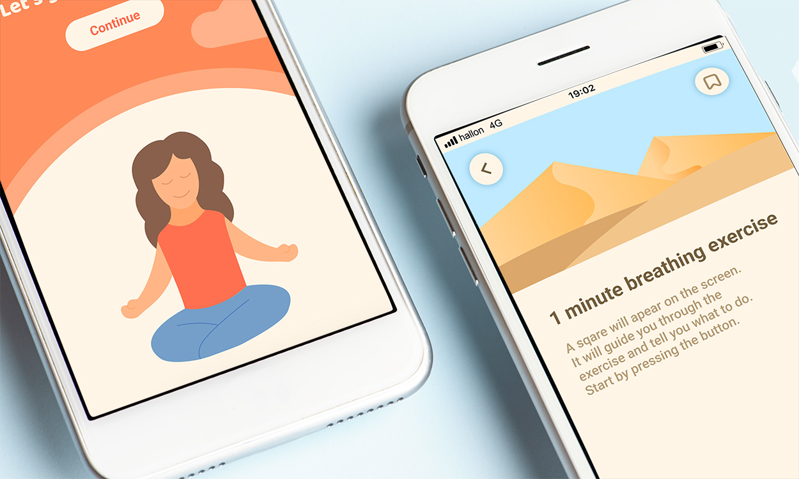
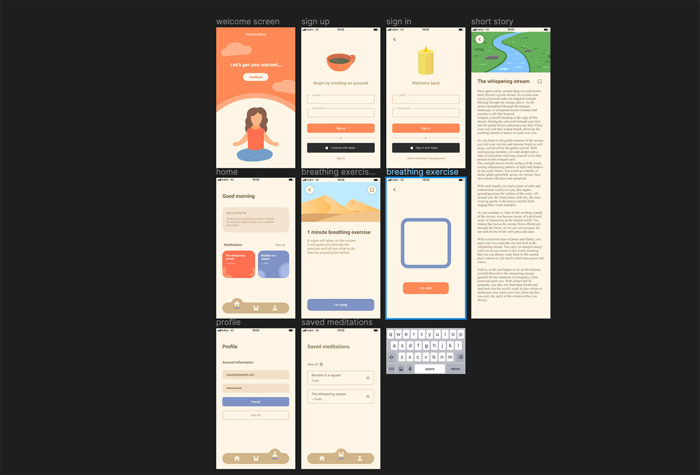
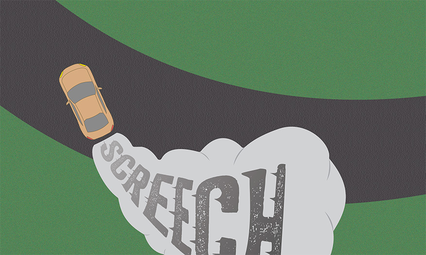
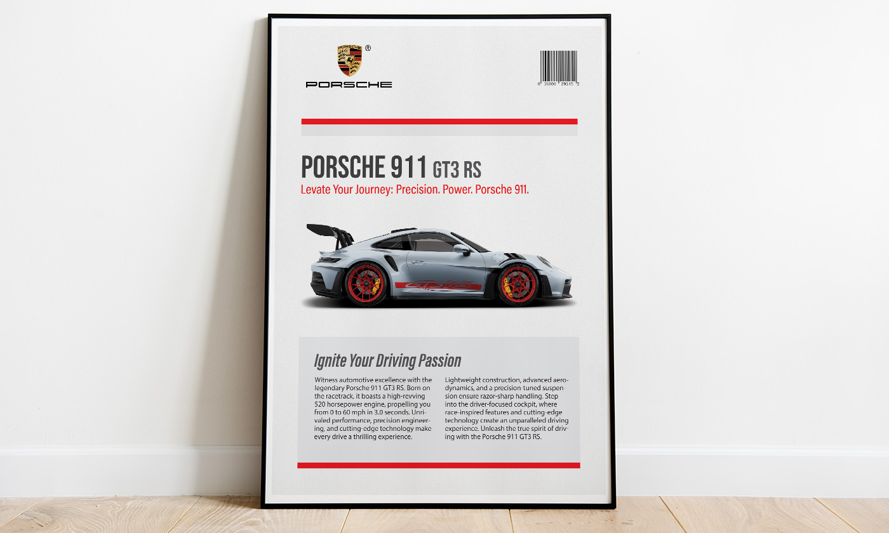
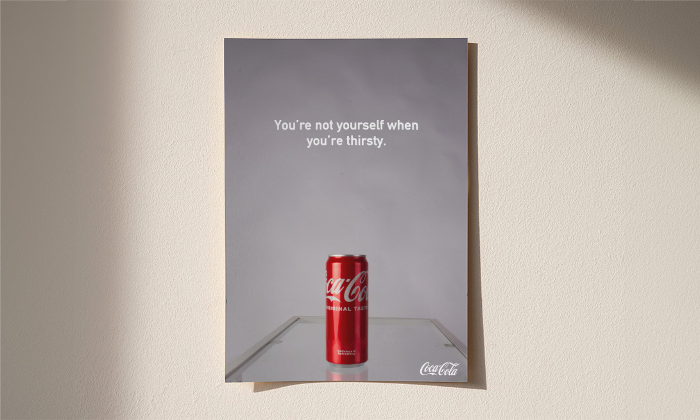
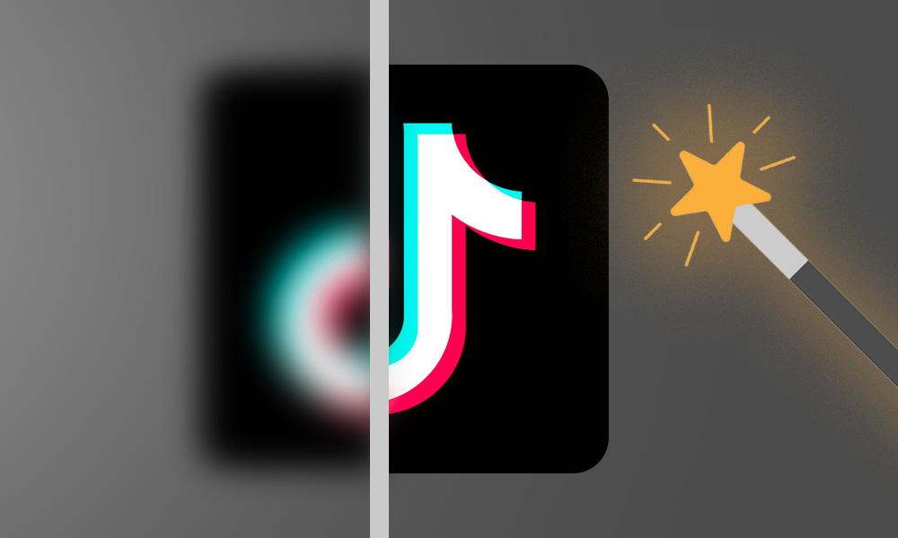
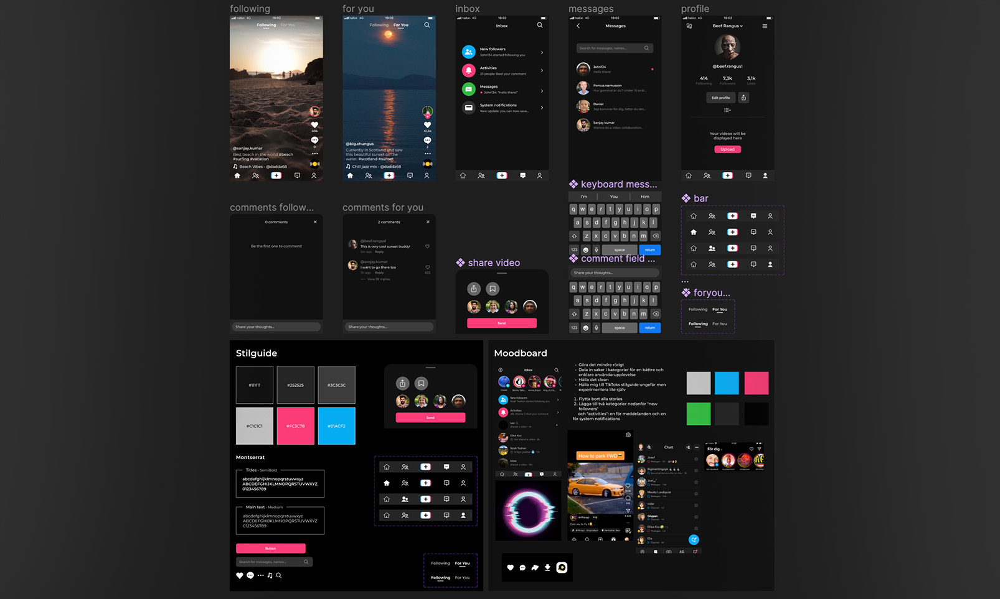

We had an assignemnt in school where we created an infographic for a recipe of our
choosing. I wanted to go for a simple yet creative style, while using colors that
reflects the target audience and are nice to look at.

Serene mind

Serene mind
We had an assignemnt in school to design a mindfulness app based on a target group
survey. I noted things like which colors made people calm and about what they want from
a mindfulness app. Based on that, I worked on the app for a couple of weeks before
handing it in.

Onomatopoetic words
Onomatopoetic words
The assignemnt was to visualize an onomatopoetic word based on how it sounds. I chose
the word "wroom" since I thought it would be really cool to make something with a car. I
therefore positioned a car in a wat htat it looks like it's drifting. I then picked a
font that gave of the same feeling as "screech", which I thought would be a thicker one.
I warped it so it looked like it was kinda stuck in the asphalt but at the same time
moved with the smoke.

Porsche poster
Porsche poster
I wanted to create a car poster since I had seen many of them recently and got
inspired. I wanted to go for a sleak and simple theme and therefore wanted a car with a
likewise design. The Porsche 911 felt like the best option since it has a mix of sharp
and round shapes. For the colors, I tried to only use the colors that was on the car. It
was important for me to not make it feel too cluttered and point most focus on the car.
I think I achieved that by using a lot fo whitespace and having the car being the
biggest element.

Coca cola poster
Coca Cola poster
In photo class, we had a lession assignemnt to take a product photography. I found an
empty coke can and thought it would be a good idea since it containes a very strong
color. I also amplified that by choosing a gray background, which made the can stand out
even more. Since the main focus was on taking a picture, and there wasn't much time
left, I just slapped the coke logo on there and used Snickers slogan since this part
wasn't serious.

TikTok redesign

TikTok redesign
This was at the time the biggest project I had worked on. I made it in UX/UI interface
class and the brief was to redesign parts of any app of our choice. I had allready
noticed that TikTok had a lot of flaws and questionable things in their interface and
therefore, I chose this app.
I started of by going thrugh other social platform apps, searching for inspiration but
also things I didn't want. I then went on to create a moodboard where I collected theese
different apps and also images that matched TikToks aesthetic. The project spanned over
several weeks and I went forward and backward trying to perfect it. At the end of the
project, I felt saticfied with the result and I think the app became much simpeler while
still keeping it's original style.